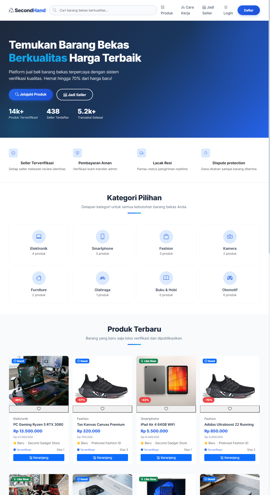

W-01
Secondhand Marketplace
Front-end demo for a second-hand marketplace. Product listings, categories, detail views - static build deployed on GitHub Pages.

↕ Hover/touch to slide webpage preview
Open live ↗
I’m Muhamad Dafin Al Dzaky, full-stack web developer and software engineer based in Bekasi, Indonesia. I build robust web applications with Laravel, PHP, and modern JavaScript, building end-to-end management systems, API automations, and data-driven platforms. I also handle computer hardware assembly, diagnostics, and system setup.
01 / Gallery
Selected production websites and frontend builds. Click any preview card or Open live to browse the projects.
02 / Automation
This project runs headless. The useful part is the pipeline: where leads enter, how they are filtered, and when the bot sends them to WhatsApp.
S-01
AI & Automation · KLIK Rekrut · Node.js
Headless by design. 24/7 background worker. Architecture walkthrough and source code available on request.
03 / Work log
Full-Stack Web Developer / Software Engineer
2025 – Present
Z3 Techno Solution · Bekasi, Indonesia
Laravel (11/12) · PHP 8.2+ · MySQL · SQLite · Python (Tesseract OCR) · Blade · Vite · Tailwind CSS · PHPUnit
AI & Automation Developer
Aug 2026 - Now
KLIK Rekrut · Jakarta Pusat (remote)
Node.js · JavaScript · Gemini API · Groq API · Baileys WA API · Scraping · Automation
Web Developer
May 2026 - Jul 2026
KLIK Rekrut · Jakarta Pusat (remote)
Google Apps Script · JavaScript · PHP · HTML · CSS
WordPress Developer
Mar 2026 - May 2026
PT Institute Research Japan Indonesia · Jakarta Pusat (remote)
WordPress · PHP · HTML · CSS · JavaScript · Project Management
Web Developer - Internship & Freelance
Jun 2025 - Jul 2025
KLIK Rekrut · Jakarta (remote)
Laravel · Blade · Bootstrap · JavaScript · Git · HTML · CSS
Barista
2023 - 2025
Kopi Konnichiwa · Bekasi
Prepared and served coffee and beverage orders in a fast-paced café; maintained service standards.
04 / Profile
Bio
S1 Informatics graduate (Software Engineering concentration), Universitas Bhayangkara Jakarta Raya, 2022–2026. Vocational RPL background (SMKN 5 Bekasi, 2019–2022). I build full-stack websites end to end, and I also handle hardware: assembly, config, troubleshooting, installs.
Tech Stack
Backend & Core
Databases
Frontend
Automation & APIs
Testing & Tools
Hardware & support
Certs
05 / Contact
Open for full-time, freelance, and project work. Fastest reply: email or WhatsApp. Based in Bekasi Utara. Remote OK.
muhamaddafinaldzaky@gmail.com +62 812-8184-5863
CURRENTLY TAKING
PROJECTS
Full-time · Freelance · Project work
Web builds, WordPress work, and automation systems.